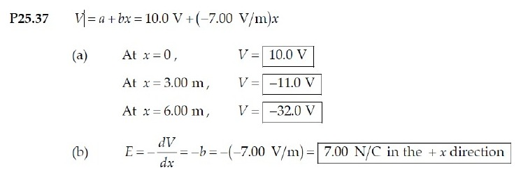
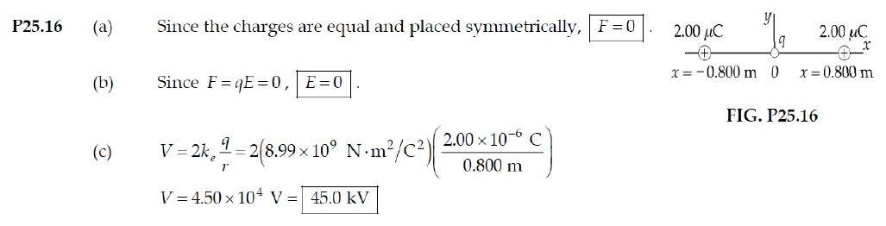
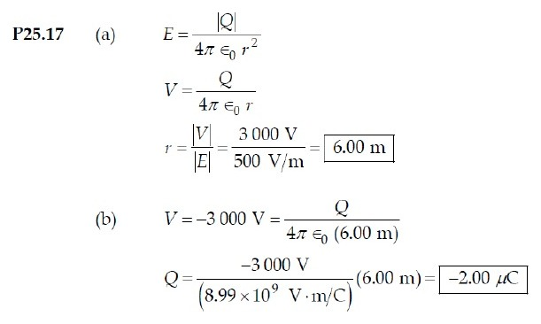
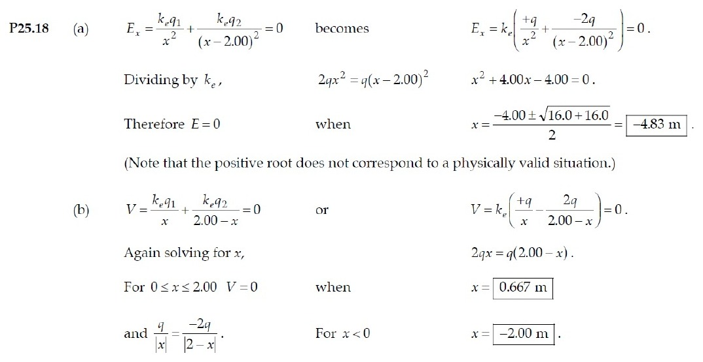

PHYS 210 · CK #2 · SOLUTION KEY
Supplementary Practice 8 Attempt all questions. This supplementary paper covers supporting material and is not a replica of the announced four-topic selection.
Worked explanations are Tesselate study notes. The linked source page also includes the instructor’s or textbook’s original solution where available.
QUESTION 1 · Tutorial 5 · 37
Potential and field from a linear function Exact question and original solution screenshots ↗
Evaluate the potential Substitute each coordinate in the given linear function.
V ( 0 ) = 10.0 V , V ( 3 ) = − 11.0 V , V ( 6 ) = − 32.0 V V(0)=10.0\ \mathrm V,\quad V(3)=-11.0\ \mathrm V,\quad V(6)=-32.0\ \mathrm V V ( 0 ) = 10.0 V , V ( 3 ) = − 11.0 V , V ( 6 ) = − 32.0 V Differentiate Electric field is the negative spatial derivative. The constant slope gives the same field throughout the stated region.
E = − d V d x x ^ = + 7.00 x ^ V / m \mathbf E=-\frac{dV}{dx}\hat{\mathbf x}=+7.00\hat{\mathbf x}\ \mathrm{V/m} E = − d x d V x ^ = + 7.00 x ^ V/m V = ( 10.0 , − 11.0 , − 32.0 ) V ; E = 7.00 x ^ V / m at all three points V=(10.0,-11.0,-32.0)\ \mathrm V;\qquad\mathbf E=7.00\hat{\mathbf x}\ \mathrm{V/m}\ \text{at all three points} V = ( 10.0 , − 11.0 , − 32.0 ) V ; E = 7.00 x ^ V/m at all three points Potential decreases toward +x, so the field points +x. Endpoint values use the field within the stated region.
Instructor’s posted D2L solution 
D2L source · page 2 ↗ QUESTION 2 · Tutorial 5 · 16
Symmetric charges: zero field, nonzero potential Exact question and original solution screenshots ↗
Add the fields as vectors Equal positive charges at equal distances produce equal, opposite x-directed fields at the origin.
E = k Q r 2 x ^ − k Q r 2 x ^ = 0 \mathbf E=\frac{kQ}{r^2}\hat{\mathbf x}-\frac{kQ}{r^2}\hat{\mathbf x}=0 E = r 2 k Q x ^ − r 2 k Q x ^ = 0 Find the test-charge force The force is the test charge times the net external field.
F = q E = 0 \mathbf F=q\mathbf E=0 F = q E = 0 Add potentials as scalars Both source charges give positive potential; their potentials do not cancel.
V = 2 k Q r = 2 ( 8.988 × 10 9 ) ( 2.00 × 10 − 6 ) 0.800 = 4.49 × 10 4 V V=\frac{2kQ}{r}=\frac{2(8.988\times10^9)(2.00\times10^{-6})}{0.800}=4.49\times10^4\ \mathrm V V = r 2 k Q = 0.800 2 ( 8.988 × 1 0 9 ) ( 2.00 × 1 0 − 6 ) = 4.49 × 1 0 4 V (a) F = 0 ; (b) E = 0 ; (c) V = 44.9 k V \text{(a) }\mathbf F=0;\quad\text{(b) }\mathbf E=0;\quad\text{(c) }V=44.9\ \mathrm{kV} (a) F = 0 ; (b) E = 0 ; (c) V = 44.9 kV A zero potential gradient at the symmetry point does not require the potential itself to be zero.
Instructor’s posted D2L solution 
D2L source · page 2 ↗ QUESTION 3 · Tutorial 5 · 17
Recovering a point charge from E and V Exact question and original solution screenshots ↗
Eliminate charge Divide the point-charge potential magnitude by field magnitude.
∣ V ∣ = k ∣ Q ∣ r , E = k ∣ Q ∣ r 2 ⇒ r = ∣ V ∣ E = 3000 500 = 6.00 m |V|=\frac{k|Q|}{r},\quad E=\frac{k|Q|}{r^2}\quad\Rightarrow\quad r=\frac{|V|}{E}=\frac{3000}{500}=6.00\ \mathrm m ∣ V ∣ = r k ∣ Q ∣ , E = r 2 k ∣ Q ∣ ⇒ r = E ∣ V ∣ = 500 3000 = 6.00 m Recover charge Use the potential equation. Negative potential means the source charge is negative.
∣ Q ∣ = ∣ V ∣ r k = 3000 ( 6.00 ) 8.988 × 10 9 = 2.00 × 10 − 6 C |Q|=\frac{|V|r}{k}=\frac{3000(6.00)}{8.988\times10^9}=2.00\times10^{-6}\ \mathrm C ∣ Q ∣ = k ∣ V ∣ r = 8.988 × 1 0 9 3000 ( 6.00 ) = 2.00 × 1 0 − 6 C (a) r = 6.00 m ; (b) ∣ Q ∣ = 2.00 μ C ( Q < 0 ) \text{(a) }r=6.00\ \mathrm m;\qquad\text{(b) }|Q|=2.00\ \mu\mathrm C\quad(Q<0) (a) r = 6.00 m ; (b) ∣ Q ∣ = 2.00 μ C ( Q < 0 ) Substitution into k|Q|/r² returns 500 V/m.
Instructor’s posted D2L solution 
D2L source · page 2 ↗ QUESTION 4 · Tutorial 5 · 18
Where field and potential vanish Exact question and original solution screenshots ↗
Locate possible field cancellation Between the charges both fields point right. To the right of −2q its field is stronger. Cancellation is possible only at x < 0, outside the smaller charge.
k q x 2 = 2 k q ( 2 − x ) 2 ( x < 0 ) \frac{kq}{x^2}=\frac{2kq}{(2-x)^2}\quad(x<0) x 2 k q = ( 2 − x ) 2 2 k q ( x < 0 ) Solve the field equation in its valid region For x < 0, distances are −x and 2−x. Take the positive square root and solve.
2 − x = 2 ( − x ) ⇒ x = − 2 ( 1 + 2 ) = − 4.83 m 2-x=\sqrt2(-x)\quad\Rightarrow\quad x=-2(1+\sqrt2)=-4.83\ \mathrm m 2 − x = 2 ( − x ) ⇒ x = − 2 ( 1 + 2 ) = − 4.83 m Solve the scalar potential equation Potentials cancel when the distance to −2q is twice the distance to +q. The absolute-value equation has one root between the charges and one to their left.
k q ∣ x ∣ − 2 k q ∣ x − 2 ∣ = 0 ⇒ ∣ x − 2 ∣ = 2 ∣ x ∣ ⇒ x = − 2.00 m , 2 3 m \frac{kq}{|x|}-\frac{2kq}{|x-2|}=0\quad\Rightarrow\quad |x-2|=2|x|\quad\Rightarrow\quad x=-2.00\ \mathrm m,\ \frac23\ \mathrm m ∣ x ∣ k q − ∣ x − 2∣ 2 k q = 0 ⇒ ∣ x − 2∣ = 2∣ x ∣ ⇒ x = − 2.00 m , 3 2 m (a) x = − 4.83 m ; (b) x = − 2.00 m , + 0.667 m \text{(a) }x=-4.83\ \mathrm m;\qquad\text{(b) }x=-2.00\ \mathrm m,\ +0.667\ \mathrm m (a) x = − 4.83 m ; (b) x = − 2.00 m , + 0.667 m Neither charge location is allowed. Checking field directions removes the spurious positive root of the squared field equation.
Instructor’s posted D2L solution 
D2L source · page 3 ↗